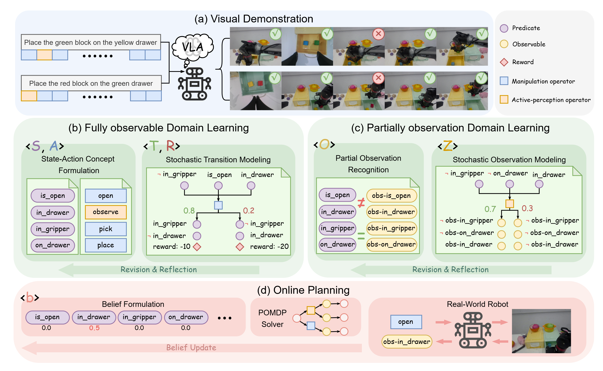

push the black box to the top of the yellow drawer.
Project Page
PO-PDDL: Learning Symbolic POMDPs from Visual Demonstrations for Robot Planning Under Uncertainty

Abstract
Real-world robot task planning must operate under both stochastic action execution and partial observability, yet constructing Partially Observable Markov Decision Process (POMDP) models for real robotics domains remains difficult and labor-intensive. We introduce PO-PDDL, a symbolic formulation of POMDPs that preserves the relational structure and LLM-friendly syntax of the Planning Domain Definition Language (PDDL), while explicitly modeling partial observability, stochasticity, and beliefs. Building on this formulation, we propose a demonstration-driven pipeline for learning PO-PDDL models. The proposed method reconstructs latent symbolic state trajectories from real-robot execution videos, identifies partial observability via inconsistencies between inferred states and visual observations, and learns stochastic transition and observation models accordingly. The resulting PO-PDDL domains are reusable across tasks and enable online belief-space planning under both perception and execution uncertainty. Experiments on real-world long-horizon manipulation tasks show that our method consistently outperforms existing PDDL and POMDP model-learning approaches, achieving robust task planning under uncertainty with significantly lower planning cost.
Demo Videos
put one of the blocks on top of one of the drawers, and close all the drawer.
place all the cups with dark liquid on the top of the green drawer on the right, and keep all the cups without dark liquid on the table.
put all the blocks in the same drawer, and close all the drawer.
put all the blocks in the same drawer, and close all the drawer.
Experimental Results